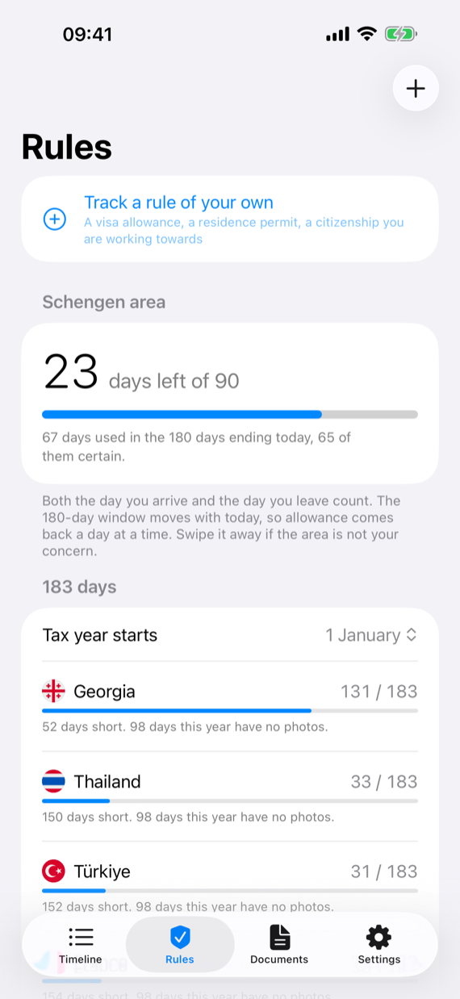
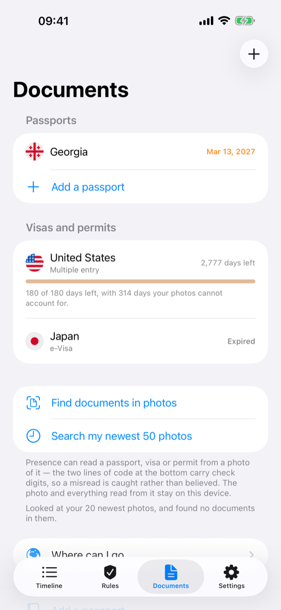
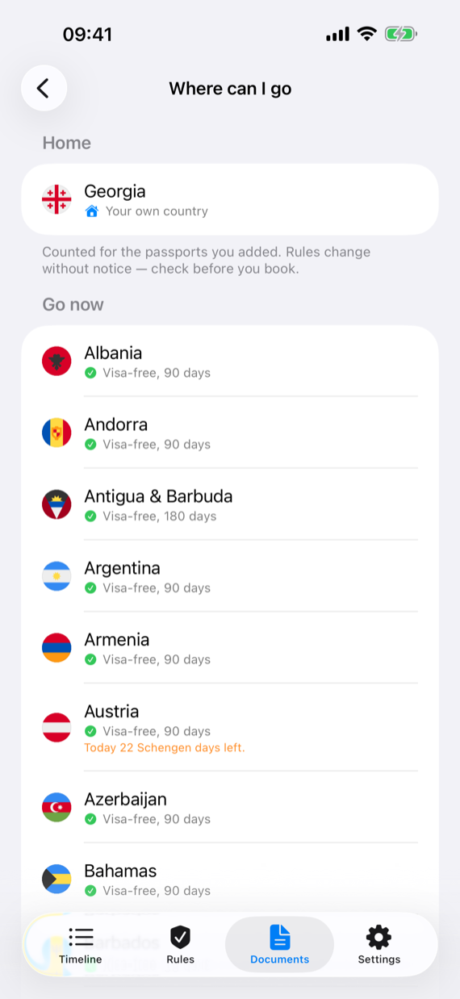
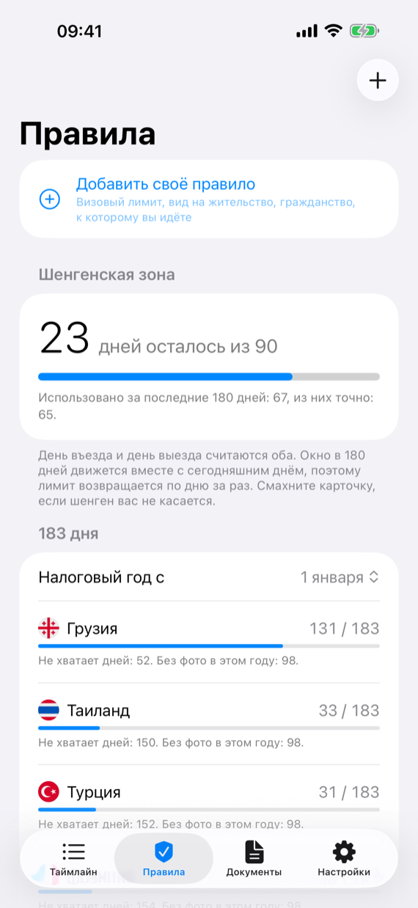
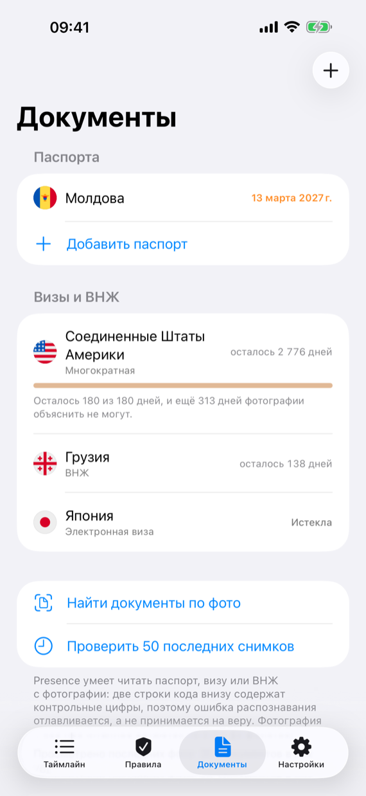
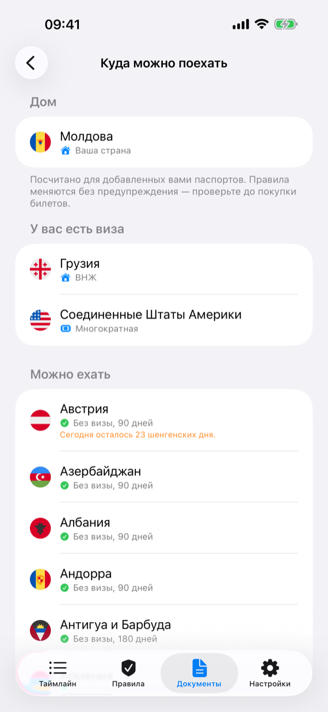

Everything that reads your library, counts your days, and keeps your documents costs nothing and always will. Presence Pro is for what comes next: being told before a limit is reached, seeing a rule on the home screen, and putting the count on paper.
A notification before a visa runs out, before a passport expires, and before a rolling window closes on you. Presence knows the dates; Pro is what lets it interrupt you with them.
Rule widgets
A rule on the home screen, counting down without the app being opened. The current-country widget stays free.
PDF reports
A dated report of your days, by country and by stay, with the evidence behind each day named. For an accountant, a lawyer, or an immigration form. CSV export stays free.
Where you can go
Your documents, read against the rules, turned into the list of countries you may enter today and how long you may stay.

The counts are free. Being told before they run out is Pro.

Documents without limit, each with its deadline.

Where you can go, with today's Schengen days beside it.
What stays free
Reading the whole photo library, on every launch, however large it is.
Your entire travel history, every country, every year, with no cut-off.
Manual corrections, added stays, and the confidence behind every day.
Recording the country you are in now, in the background, so today is not lost.
Travel documents without limit, including reading a passport or visa from a photograph.
Rules without limit, computed and readable in the app.
The current-presence widget, backup and restore, and CSV export.
Pro is not a lock on your data. If a subscription lapses, nothing is deleted and nothing is hidden. Your rules go on counting, your settings are remembered, and the app says plainly where it has gone quiet.
The plans
Yearly
€19.99/year
The usual way to pay for it.
Monthly
€2.99/month
For a single trip, or to try it against a real deadline.
Founders
€49.99once
Pay once, keep it. A limited offer for the app's early travellers, and it will be withdrawn.
Prices are shown for the euro zone and vary by country; the App Store shows yours before you confirm. Purchases are shared with your family group.
Questions
How do I cancel?
In iOS Settings, under your name, Subscriptions. Presence cannot cancel it for you and does not ask you why.
I paid on another device.
Open Presence, go to Settings, Presence Pro, and choose Restore purchases. Your Apple Account is the receipt.
Is the Founders purchase really permanent?
It is a one-time purchase tied to your Apple Account, and it covers every Pro feature the app gains later. What is limited is the window to buy it, not the thing you bought.
Всё, что читает медиатеку, считает дни и хранит документы, ничего не стоит и не будет стоить. Presence Pro — про то, что дальше: предупредить до того, как лимит исчерпан, вынести правило на экран «Домой» и положить подсчёт на бумагу.
Уведомление до того, как закончится виза, истечёт паспорт или скользящее окно закроется. Даты приложение знает и так; Pro — это право потревожить вас ими.
Виджеты правил
Правило на экране «Домой», которое считает, пока приложение закрыто. Виджет текущей страны остаётся бесплатным.
Отчёты PDF
Отчёт с датами: дни по странам и по поездкам, и для каждого дня названо основание. Для бухгалтера, юриста или миграционной формы. Экспорт в CSV остаётся бесплатным.
Куда можно поехать
Ваши документы, сверенные с правилами: список стран, куда вы можете въехать сегодня, и на сколько дней.

Счёт бесплатный. Предупреждение, пока лимит не исчерпан, — это Pro.

Документы без ограничений, у каждого свой срок.

Куда можно поехать — и рядом сегодняшние шенгенские дни.
Что остаётся бесплатным
Чтение всей медиатеки при каждом запуске, какого бы она ни была размера.
Вся история поездок — все страны, все годы, без обрезки.
Ручные исправления, добавленные поездки и достоверность каждого дня.
Запись текущей страны в фоне, чтобы сегодняшний день не потерялся.
Проездные документы без ограничения, включая распознавание паспорта или визы с фотографии.
Правила без ограничения — они считаются и читаются в приложении.
Виджет текущей страны, резервная копия и восстановление, экспорт в CSV.
Pro не запирает ваши данные. Если подписка закончилась, ничего не удаляется и не прячется. Правила продолжают считать, настройки помнятся, а приложение прямо говорит, где оно замолчало.
Тарифы
Год
19,99 €в год
Обычный способ за это платить.
Месяц
2,99 €в месяц
На одну поездку или чтобы проверить на настоящем сроке.
Founders
49,99 €один раз
Заплатить один раз и оставить себе. Ограниченное предложение для первых — оно будет снято.
Цены указаны для зоны евро и различаются по странам; свою вы увидите в App Store до подтверждения. Покупки доступны участникам вашей семейной группы.
Вопросы
Как отменить?
В настройках iOS, под вашим именем, раздел «Подписки». Presence не может отменить её за вас и не спрашивает о причинах.
Я оплатил на другом устройстве.
Откройте Presence, «Настройки», «Presence Pro», «Восстановить покупки». Чек — это ваш Apple Account.
Founders действительно навсегда?
Это разовая покупка, привязанная к Apple Account, и она покрывает все функции Pro, которые появятся позже. Ограничено окно покупки, а не то, что вы купили.